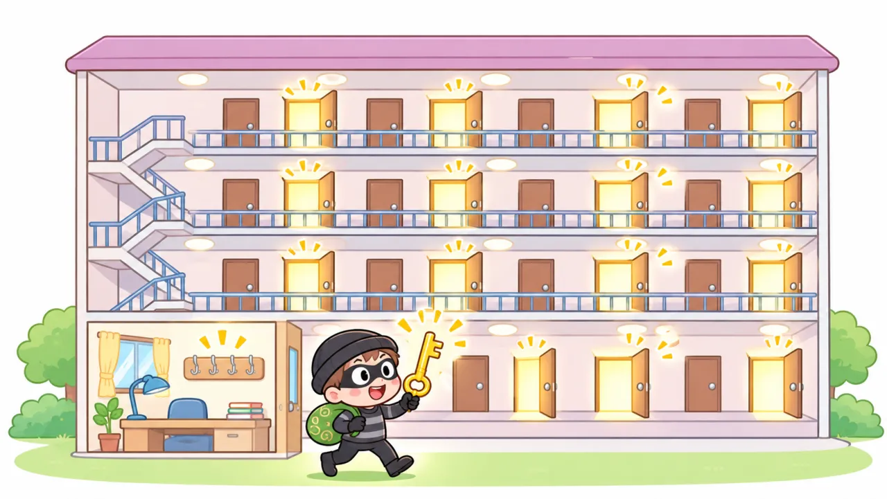

図解：GMO「お名前.com デスクトップクラウド」不正アクセス事件 ― 1本の合鍵から、2万台と利用者のPCまで
最終更新日 2026年11月09日投稿日 2026年10月26日
2026年11月9日時点の公式発表・11月2日の記者会見・報道にもとづきます。捜査と調査は続いていて、内容は今後変わる可能性があります。会社が認めたことと攻撃者の主張（本当かどうか分からないこと）は分けて書いています。
3行でいうと
- FX の自動売買に使う「クラウドの上のパソコン」を貸すサービスで、1台に入り込まれたところから、全部を管理する「合鍵」を奪われ、最大26,739台に不正なプログラムを配られた。
- そのパソコンに保存されていた証券・FX口座のパスワードが使われて口座が勝手に操作され、さらにリモートデスクトップの「ドライブ共有」を通って、利用者の自宅PCのファイルまで盗まれた。
- 侵入は8月から始まっていたのに、約2か月半だれも気づかなかった。2024年には同じグループのセキュリティ会社から弱点を指摘されていたが、社長まで届いていなかった。
1. どんなサービスだったの？
「お名前.com デスクトップクラウド」は、インターネットの向こうにある Windows のパソコン（VPS）を1台まるごと借りられるサービスです。FX（外国のお金の売り買い）の自動売買ソフトを24時間動かしっぱなしにするために、個人投資家に使われていました。
- リモートデスクトップ（RDP）：遠くのパソコンの画面を、自分のパソコンに映して操作するしくみ
- MT4 / MT5：FX の取引ソフト。再起動しても自動でログインできるよう、口座のIDとパスワードを覚えさせるのが普通の使い方だった
2. 何がいつ起きた？（時系列）
3. 攻撃の流れ ― 1本の合鍵から全部へ
11月2日の記者会見で、会社は侵入の流れを次のように説明しました。
| ステップ | 何が起きた？ | たとえると |
|---|---|---|
| ① 1台に侵入 | 利用者のクラウドPC 1台に入り込まれた | マンションの1部屋に忍び込まれる |
| ② 合鍵を奪う | そこから管理者アカウント（全部を操作できる強い権限）を奪われた | 管理人のマスターキーを盗まれる |
| ③ 管理サーバーへ | 全部のクラウドPCを管理しているGMO 側のサーバーに入られた | 管理人室に入られる |
| ④ 全台に配る | 管理サーバーの「全台に配る機能」で、最大26,739台に不正なプログラムを入れられた | 全部の部屋に、一度に盗聴器を仕掛けられる |
4. 技術的に何がまずかった？
① 1本の合鍵で、全部が開いてしまった

たくさんのサーバーを少ない人数で管理するには、全部をまとめて操作できる管理のしくみが便利です。でも、その合鍵が1本盗まれると、全部が一度にやられるという弱点にもなります。今回は1台への侵入から合鍵を奪われ、被害が最大26,739台まで広がりました。
攻撃者は「全部のサーバーに共通の管理者アカウントがあった」と主張していますが、これは会社は認めていない、攻撃者の主張です。
考え方：権限は「必要な分だけ」（最小権限の原則）。1つの鍵で全部を開けられるようにしない、鍵を部屋ごとに分ける、強い鍵を使ったら記録を残してすぐ気づけるようにする、が基本です。
② 「ドライブ共有」で、自宅のPCまでつながっていた
リモートデスクトップには、自分のパソコンのドライブ（C ドライブなど）を、遠くのパソコンからも見えるようにする「ドライブ共有」という便利な機能があります。手元のファイルをクラウドのPCに渡したい時に使います。このサービスでは、便利さのために最初から有効になっていたと会社が認めました。
\\tsclient\C という場所として見えるそのため、クラウドのPCに入り込んだ攻撃者が、接続してきた利用者の自宅PCのファイルまで盗めてしまいました。会社は会見で、利用者の手元のファイルが盗まれたことを確認したと説明しています（範囲は調査中）。
攻撃者は「書類やブラウザに保存したパスワードなどを集めた」とするログを公開しましたが、本物かどうかは確認されていません。
考え方：便利な機能は「使う時だけ ON」。初期設定で ON にしておくと、使わない人まで危険にさらすことになります。
③ パスワードを「保存したまま」だった
FX の自動売買は24時間無人で動かすので、口座のパスワードをソフトに覚えさせておくのが普通でした。クラウドのPCに入られると、保存されたパスワードがまとめて読めてしまいます。報道では、2秒で400万円以上の損失が出た例も伝えられています。
考え方：二要素認証（2段階認証）を ON にしておけば、パスワードが盗まれても、スマホの確認がないとログインできません。会社も利用者に二要素認証を呼びかけました。
④ 2か月半、だれも気づかなかった
8月5日に入り込まれ、9月20日から10月14日まで全台に不正なプログラムが配られていたのに、会社が気づいたのは10月19日の利用者からの問い合わせでした。なぜ気づけなかったのかについて、会見では「（答えを）今持っていない」と説明されています。
考え方：「入られないこと」と同じくらい「入られたらすぐ気づくこと」が大事。強い権限の使用や、普段と違う大量の操作は、記録（ログ）を見て自動で知らせるしくみが要ります。
⑤ 2024年の指摘が、上まで届いていなかった
2024年4月、同じグループのセキュリティ会社（GMOサイバーセキュリティ byイエラエ）がこのサービスを診断し、弱点を報告していました。会社は4回の緊急メンテナンスで対応しましたが、「深さと速さの両面で不足していた」と認めています。報告は当時の担当役員までは届いていましたが、グループ代表には上がっておらず、再診断もしていませんでした。
この時の指摘が今回の入口と同じだったかどうかは、まだ分かっていません。また、ドライブ共有の問題はこの時の指摘には含まれていなかったと説明されています。
考え方：セキュリティは技術だけでなく「組織」の問題。危険の報告が、判断できる人までちゃんと届くしくみが要ります。
5. 身代金の脅迫と、会社の判断
攻撃者は、盗んだ情報を「払わなければ公開する」と脅し、お金（身代金）を要求しました。データを盗んでから脅す、最近のランサムウェア攻撃でよく使われる「二重脅迫」という手口です。
| 項目 | 内容 |
|---|---|
| 最初の要求 | 5,000万ドル（約80億円）。その後、攻撃者のサイトで 100万ドル（約1億5,700万円）に下げて、10月27日正午を期限にした（報道） |
| 脅しの中身 | 情報の公開、利用者のPCへの攻撃、取引口座の不正操作の継続（攻撃者の主張） |
| 会社の判断 | 払わない。払っても、情報を消してくれる保証も、悪用しない保証もないため |
| 期限のあと | 攻撃者が1人分とされる個人情報を公開。10月28日に攻撃者のサイトが止まり、その後の公開は確認されていない（11月8日時点の報道） |
| 犯人探し | 会社が犯人特定につながる情報に最大100万ドルの懸賞金を出すと発表。11月6日に警察庁が全国合同捜査本部を設置（11月8日時点で逮捕の発表なし） |
身代金を払うと、攻撃者の次の攻撃の資金になり、「この会社は払う」と思われて再び狙われることにもなります。そのため、払わないのが原則とされています。
6. 会社と国の対応
利用者への補償
| 補償 | 内容 |
|---|---|
| お見舞金 | 全利用者に一律 5,000円 |
| 不正取引の損失 | 全額を補償（相場の上がり下がりによる損失などは対象外）。11月6日から個別に連絡 |
| 情報が流出した人 | 特別見舞金（最大300万円） |
| 代わりのサービス | 別の基盤のサービスへの移行を案内。6か月無料。今のサービスを再開するかどうかは検討中 |
国の動き
- GMO は政府に「能動的サイバー防御」（警察などが攻撃元のサーバーに入って無害化できる制度）の適用を求めた。ただし会見で、会社が申し込めば政府が動く仕組みではなかったと認めた
- 総務省が通信会社の団体に、攻撃者のサイトへの接続を止めるよう求めた（報道）
- 11月6日、政府が緊急対策のパッケージを決め、能動的サイバー防御に関する法律の改正の検討を指示した（報道）
7. 自分たちが Web を作る時に気をつけること
| 今回の問題 | 自分たちはどうする？ |
|---|---|
| 1本の合鍵で全部が開いた | 強い権限のアカウントを作りすぎない・使い回さない。GitHub でも、他人に Owner 権限をむやみに渡さない |
| 便利な機能が最初から ON だった | 使わない機能は OFF にしておく。公開する前に「誰が何をできるか」を見直す |
| パスワードが保存されていた | コードや GitHub にパスワード・API キーを書かない（.gitignore や環境変数を使う） |
| パスワードだけで入れた | GitHub もメールも二要素認証を ON にする |
| 2か月半気づかなかった | ログイン通知・アクセス記録を確認する習慣をつける |
| 指摘が上まで届かなかった | チーム開発で「これ危ないかも」と思ったら、黙らずにすぐ共有する |
8. まだ分かっていないこと
- 最初の入口（8月5日にどうやって入られたか）
- 実際に情報を取られた人数・項目、不正取引の件数と被害の総額
- 2024年の指摘と、今回の入口が同じだったか
- 犯人がだれか（攻撃者を名乗る人物と、実際に侵入した人が同じかどうかも含めて）
出典
- お名前.com 公式のお知らせ（2026年10月21日 第1報）
- Impress Watch「お名前.comデスクトップクラウドで不正アクセス FXで不正利用も発生」
- 日本経済新聞「GMOへの攻撃者、利用者PCの乗っ取りを画策 会社は注意喚起」
- セキュリティ対策Lab「ハッカーが犯行声明、100万ドルを要求」（攻撃者の主張とログの分析）
- ピボーテ「GMO不正アクセスの原因をわかりやすく図解解説」（11月2日の会見と、その後の報道の整理）
- note「GMO『お名前.com デスクトップクラウド』不正アクセス会見を読む」（会見の書き起こし）
- NHK「GMOグループ会社に不正アクセス 個人情報最大94万件余流出か」（別の事件・2026年10月6日）
※ 10月6日に発表された GMOリサーチ&AI のアンケートサイトの件（最大約94万件）は、別の事件です。